Year
2025
Duration
1 semester
Mentoring
Christian Heusser
The documenta 16 is all about social, artistic, and societal change. My project looks at how design can ( re )build trust in art. It focuses on the idea of changeability and transformation as an aesthetic and content-related strategy.
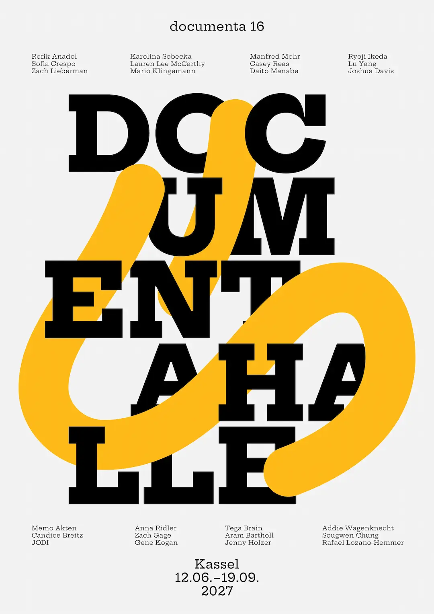
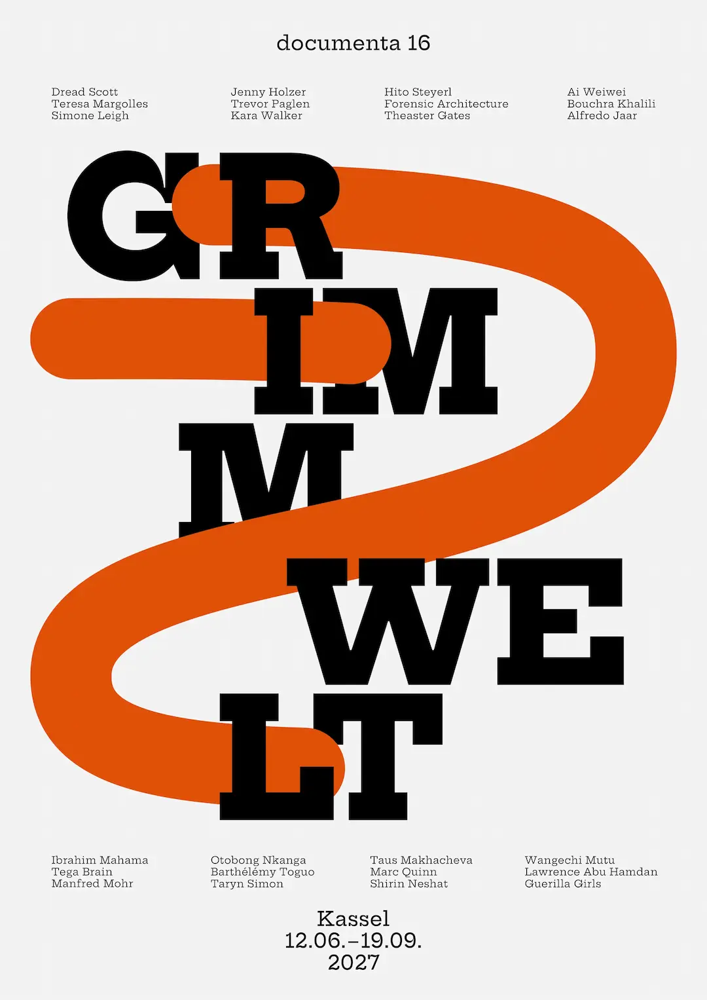
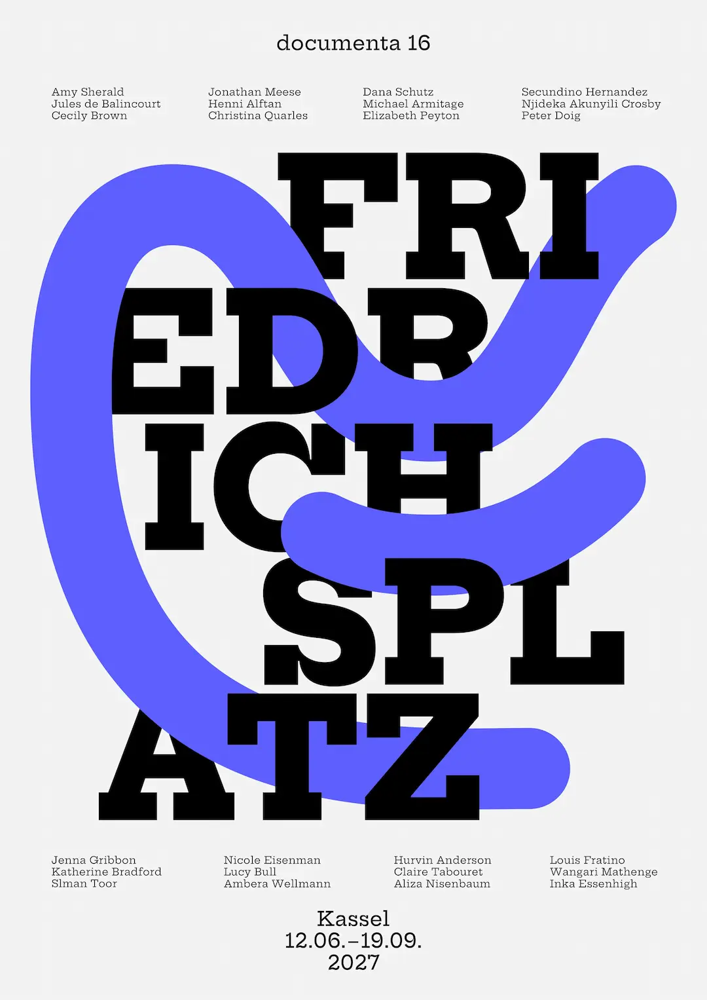
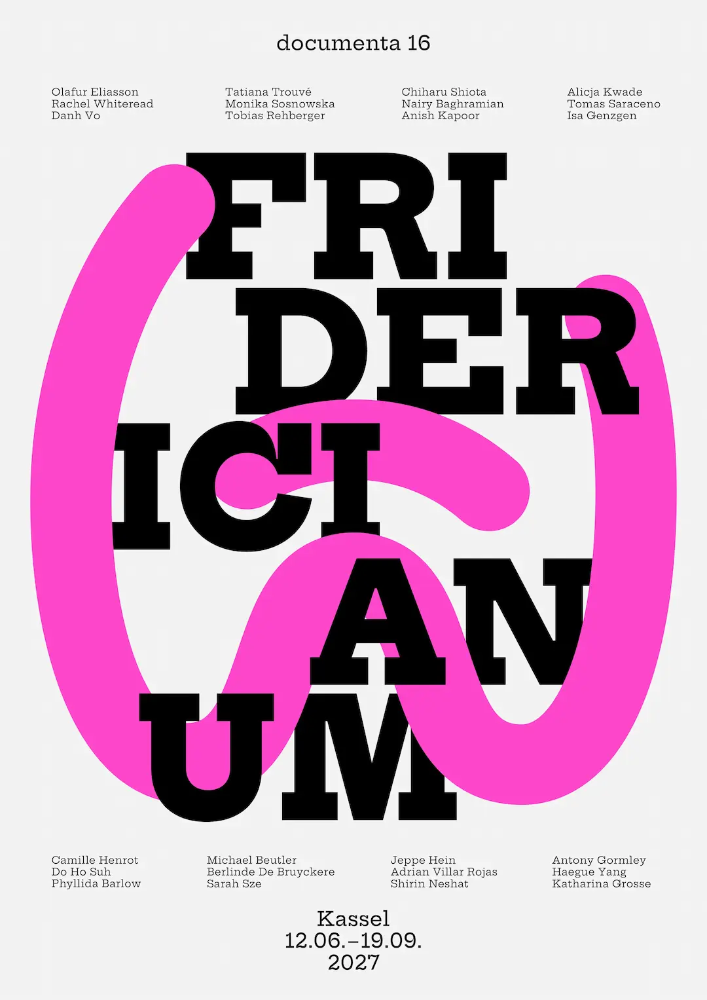
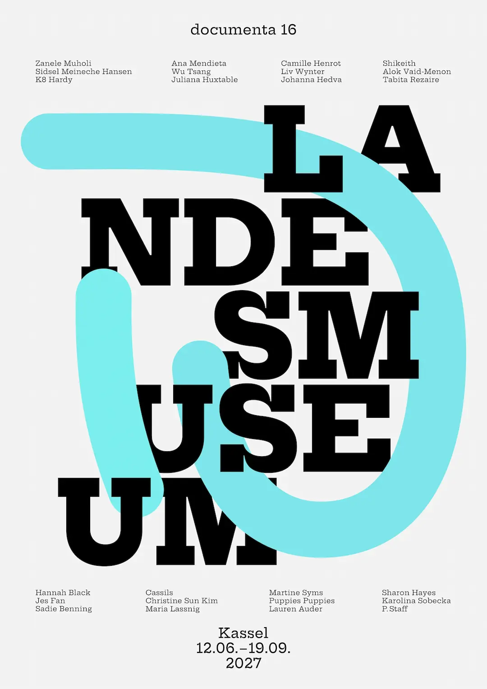
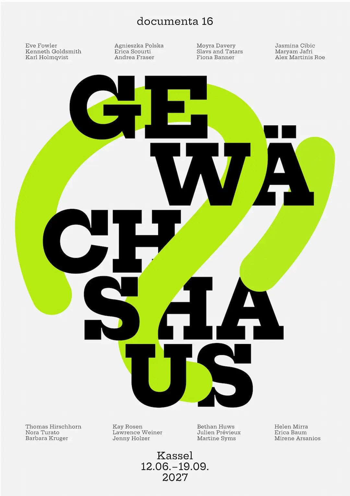
I developed a dynamic visual appearance that changes depending on the medium or context. A central component is an orientation system that functions as a metaphorical trace of the artists. Colors and shapes change, leaving room for interpretation. This visual language refers to artistic processes, collective work, and the invisible, which only becomes visible through engagement.
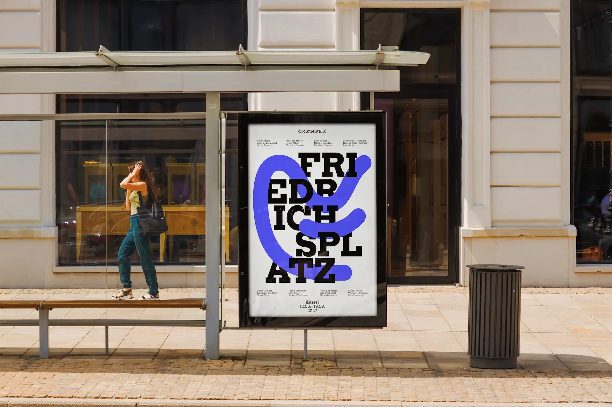
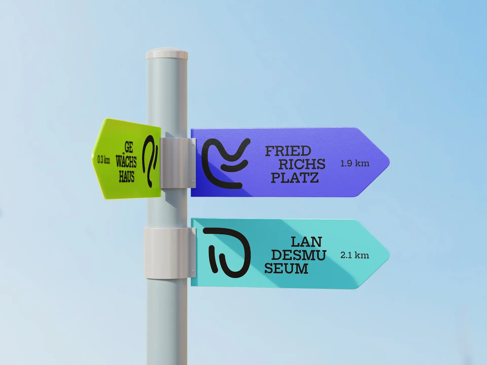
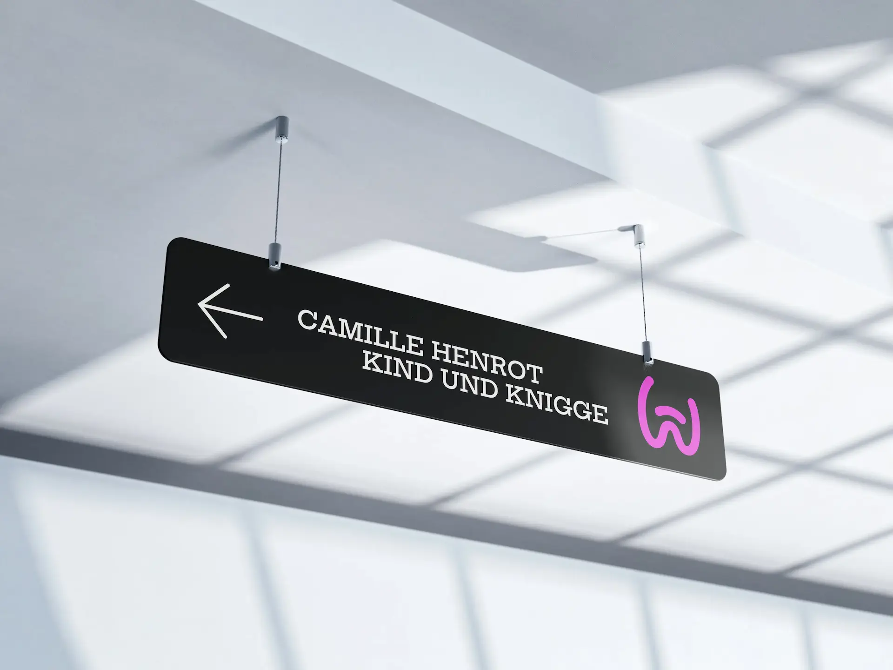
My goal is to develop a system that is appealing both aesthetically and in terms of content. In this context, art is not understood as a fixed object, but as a process, a trace, and a movement.
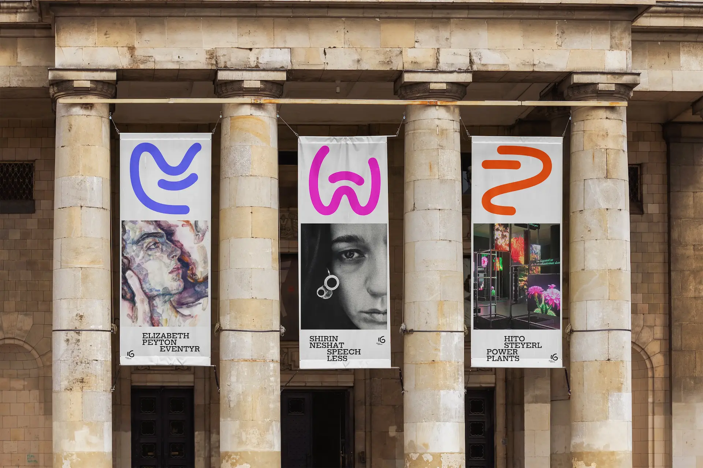
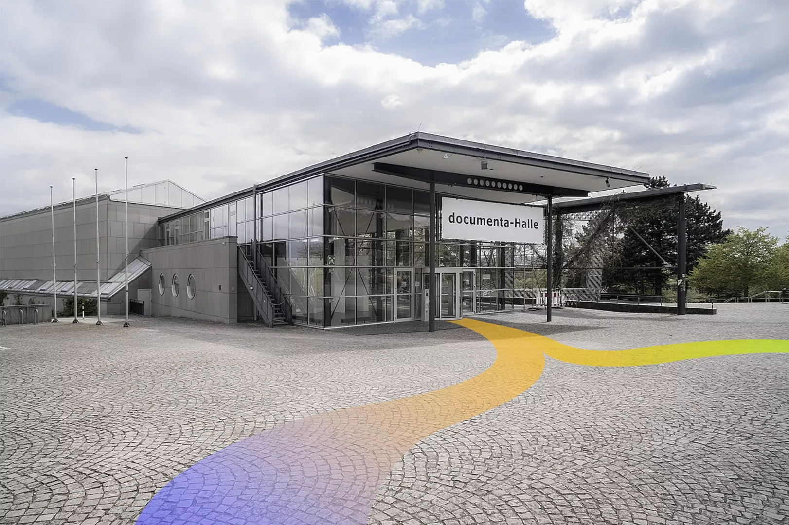
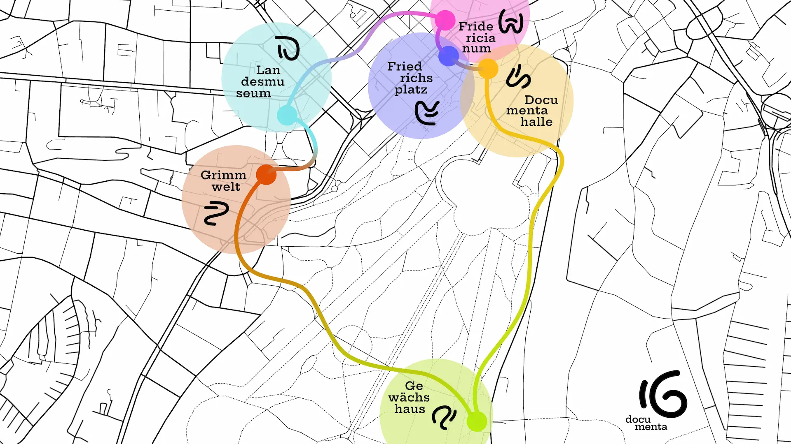